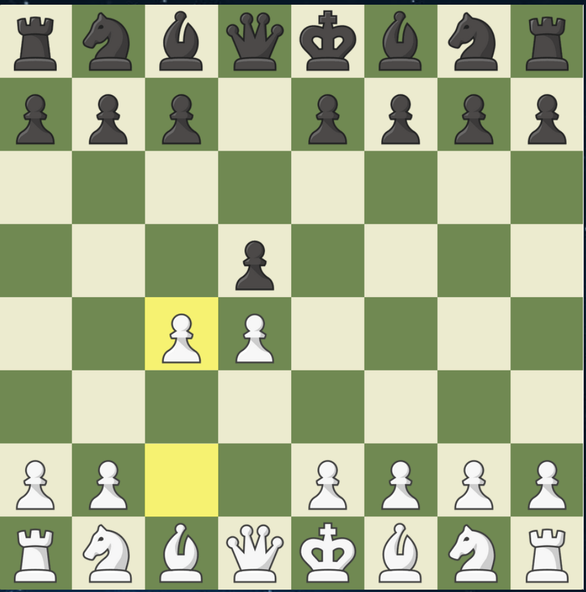

Queen's Gambit
The Queen's Gambit starts after the moves 1.d4 d5 2. c4

The Queen's Gambit is considered a more strategic opening, although it isn't
actually a Gambit as it allows white to regain the pawn back easily without any
issues.
Pros
- Fights to control the center
- Puts immediate control on Black
- Gains Space
Cons
- White may have to spend time getting the pawn back
- Less attacking chances against the black king
- Black may aim to counterattack d4
Variations
Slav Defense
Queen's Gambit Declined
Queen's Gambit Accepted